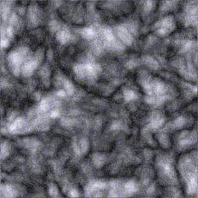
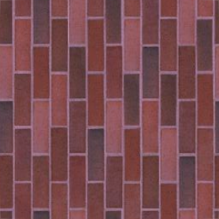
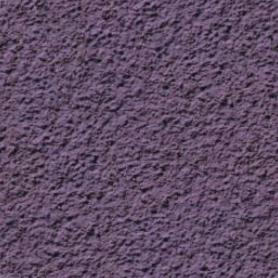

In this example, each face of the cube is an instance of a plane. Select an instance, then
click one of the buttons below to set the texture for that instance.
Currently selected Id: none
Apply Texture to Selection:


